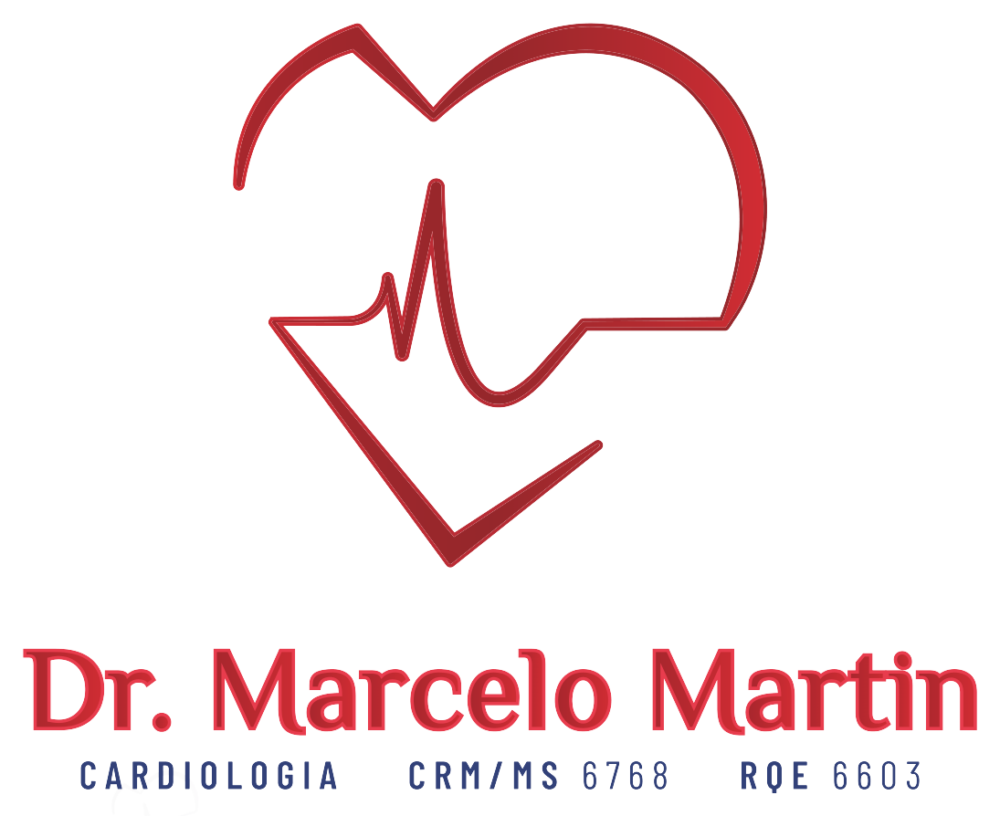

Cardiologia • CRM/MS 6768 • RQE 6603Seu cuidado, mais perto de você
Escolha a cidade e entre em contato diretamente com o local de atendimento.
Locais de atendimento
Naviraí • Complexo SplendidaRua Bunji Tadano, 260, Centro
Dourados • Clínica VitallisAgendamento e informações
Ivinhema • Clínica IkigaiAgendamento e informações
Caarapó • Clínica DTMAgendamento e informações
Caarapó • Clínica CPMEDAgendamento e informações
Itaquiraí • Laboratório São FranciscoAgendamento e informações
Compartilhe
↗ Compartilhar cartão pelo WhatsApp›